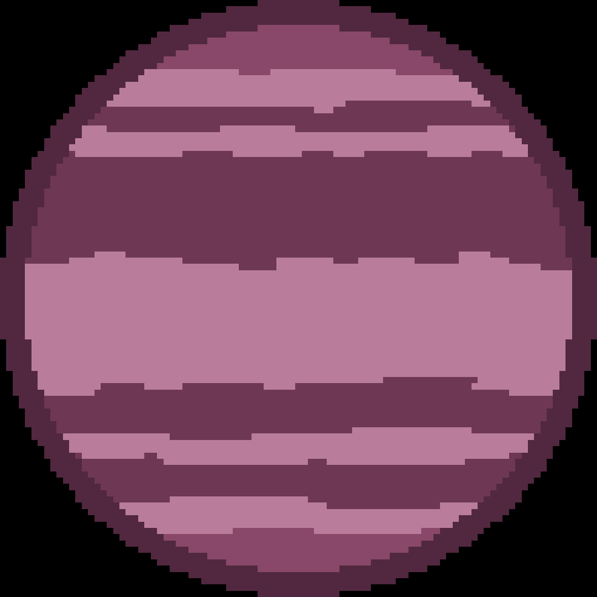

GJ 504 b är en gasjätte med en massa som är ungefär 4 gånger så stor som Jupiter. Enligt NASA, om man åkte till planeten skulle man se en planet som fortfarande är glödande av hettan från dess bildning, med en färg som liknar en mörk körsbärsblomma. GJ 504 b upptäcktes av en grupp forskare i Japan. Den upptäcktes 2013 och ligger 57 ljusår från jorden.
